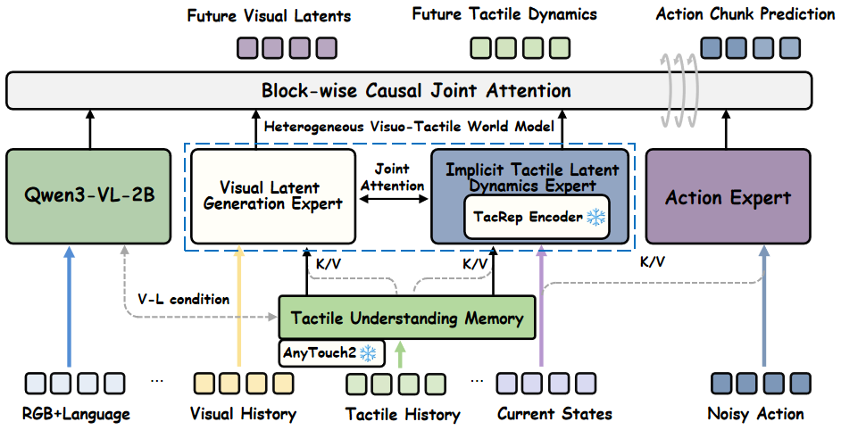
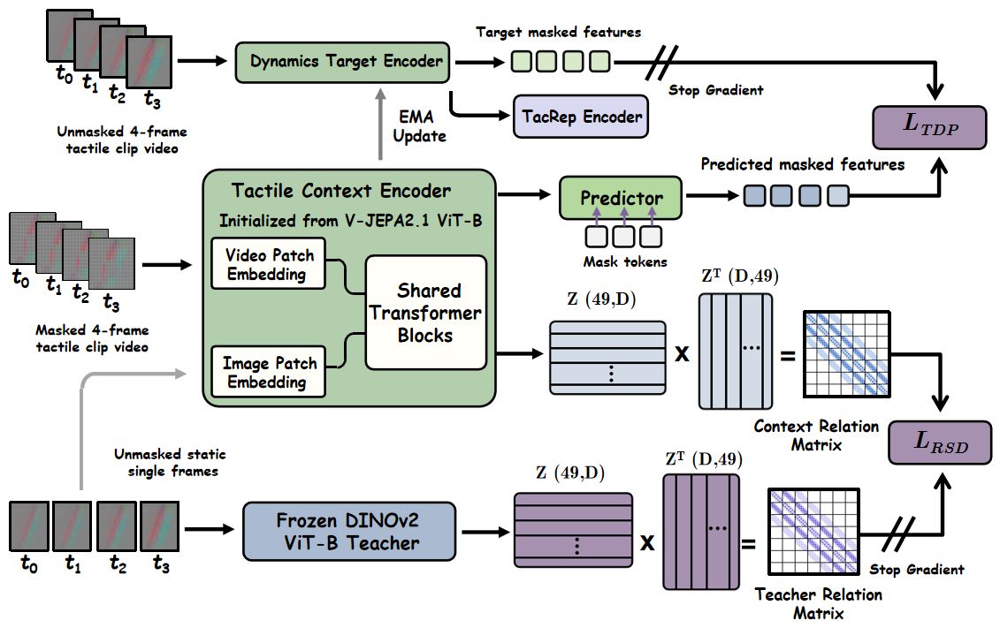
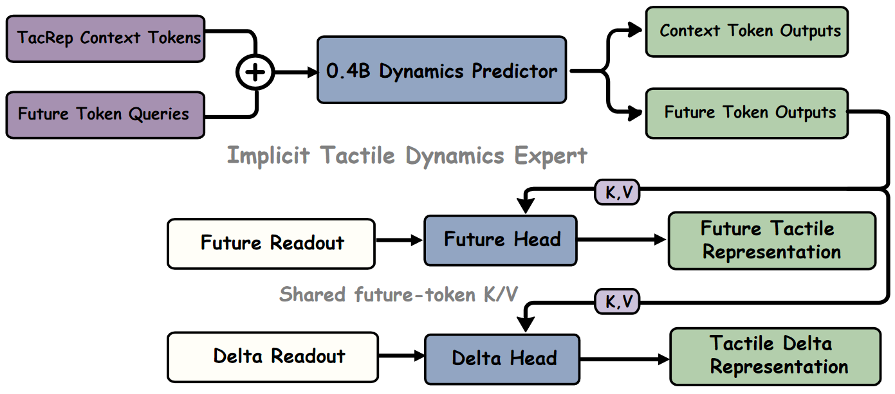
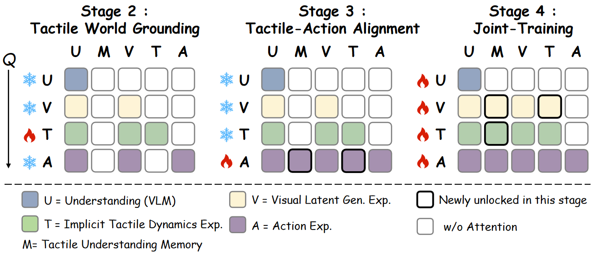

TacDyn-WAM: Learning Implicit Tactile Dynamics
in a Heterogeneous Visuo-Tactile World Action Model
† Corresponding author
Abstract
World action models improve robotic manipulation by conditioning actions on predicted futures, yet existing tactile variants largely inherit video-generation pipelines that reconstruct future tactile observations through iterative denoising. Such prediction can become unreliable under deployment drift: small changes in contact position or force may substantially alter tactile pixels even when the underlying contact evolution remains predictable. We introduce TacDyn-WAM, a heterogeneous visuo-tactile world action model that predicts implicit tactile dynamics rather than reconstructing future tactile observations. It learns TacRep, a dynamics-aware tactile target space trained through masked spatio-temporal prediction on tactile clips and regularized by relational structure distillation. A visual expert and an Implicit Tactile Dynamics Expert predict future visual and tactile representations in separate target spaces while interacting through joint attention; the tactile expert predicts future representations and their changes at multiple horizons in a single forward pass, and a read-only tactile memory supplies the current tactile state. On UniVTAC, TacDyn-WAM achieves an average success rate of 81.5% using only the provided demonstrations, reaching state-of-the-art-level performance and remaining competitive with models pretrained on large-scale visuo-tactile trajectories. Ablations confirm the benefits of both tactile pathways and TacRep over pixel-reconstruction and static alternatives. On five real-robot tasks, TacDyn-WAM reaches 71.0% average success, and modest-scale pretraining raises it to 85.0%, further validating our method.
Model Architecture
Predicting trends in contact evolution rather than future tactile pixels.

Learning TacRep

Implicit Tactile Dynamics Expert

Staged Training

Simulation Experiments
Eight UniVTAC tasks, 100 rollouts per task. TacDyn-WAM is trained on the provided demonstrations only.
SOTA-level performance
81.5%average success rate
+25.7 pointsover InternVLA-A1
7 of 8 tasksat least 72% success
| Method | Insert Hole | Insert Tube | Lift Can | Pull-out Key | Put Bottle | Lift Bottle | Grasp Classify | Insert HDMI | Avg. |
|---|---|---|---|---|---|---|---|---|---|
| Vision-only policies | |||||||||
| π₀.₅ | 25 | 74 | 6 | 35 | 34 | 100 | 49 | 8 | 41.4 |
| StarVLA-α | 52 | 69 | 65 | 51 | 88 | 32 | 68 | 24 | 56.1 |
| InternVLA-A1 | 70 | 56 | 58 | 67 | 37 | 58 | 88 | 12 | 55.8 |
| Xiaomi-Robotics-0 | 96 | 98 | 13 | 80 | 12 | 21 | 45 | 69 | 54.3 |
| GigaWorld-Policy | 12 | 9 | 0 | 32 | 21 | 38 | 20 | 0 | 16.5 |
| LingBot-VA | 42 | 96 | 0 | 58 | 0 | 0 | 17 | 38 | 31.4 |
| Fast-WAM | 66 | 98 | 0 | 73 | 35 | 21 | 72 | 19 | 48.0 |
| Visuo-tactile policies | |||||||||
| ACT+UniVTAC | 24 | 56 | 29 | 46 | 31 | 71 | 99 | 28 | 48.0 |
| VITaL | 25 | 34 | 8 | 47 | 32 | 72 | 100 | 6 | 40.5 |
| RDP | 23 | 75 | 12 | 18 | 41 | 84 | — | — | 42.2 |
| TacForcing | 69 | 79 | 63 | 48 | 43 | 90 | — | — | 65.3 |
| Tactile-WAM | 20 | 85 | 10 | 20 | 45 | 5 | 55 | 0 | 30.0 |
| Policies with large-scale visuo-tactile pretraining · shown for context | |||||||||
| FTP-1 | 64 | 79 | 65 | 48 | 47 | 97 | 99 | 4 | 62.9 |
| N₀-VTLA | 95 | 99 | 88 | 99 | 60 | 99 | 100 | 25 | 83.1 |
| N₀-TWAM (20% data) | 78 | 96 | 80 | 25 | 46 | 51 | 95 | 52 | 65.4 |
| N₀-TWAM | 99 | 98 | 93 | 79 | 87 | 58 | 94 | 68 | 84.5 |
| Our method · provided demonstrations only | |||||||||
| TacDyn-WAM (ours) | 91 | 97 | 87 | 97 | 72 | 97 | 99 | 12 | 81.5 |
Gray rows use large-scale visuo-tactile trajectory pretraining and are shown for context, as in the paper. “—” denotes an unreported result; averages for incomplete rows use their reported tasks.
Real-World Experiments
We evaluate five contact-rich tasks—Stack Cups, Remove Plug, Insert Plug, Unscrew Cup Lid, and Wipe Whiteboard—on a Franka Research 3 arm with Xense tactile sensors on both fingers. Each task uses 60 demonstrations and 20 evaluation trials per policy.
| Method | Stack Cups | Remove Plug | Insert Plug | Unscrew Cup Lid | Wipe Whiteboard | Avg. |
|---|---|---|---|---|---|---|
| LingBot-VA | 40 | 10 | 45 | 15 | 50 | 32.0 |
| InternVLA-A1 | 55 | 20 | 45 | 10 | 70 | 40.0 |
| FTP-1 | 65 | 45 | 65 | 20 | 80 | 55.0 |
| TacDyn-WAM | 80 | 60 | 80 | 40 | 95 | 71.0 |
| TacDyn-WAM (pretrained) | 95 | 85 | 90 | 55 | 100 | 85.0 |
Modest-scale tactile pretraining. Using a 6,000-trajectory OmniViTac subset, with our 300 task demonstrations additionally used in Stages 1–2, pretraining improves all five tasks and raises average success from 71.0% to 85.0%. All baselines are fine-tuned per task on the same demonstrations.